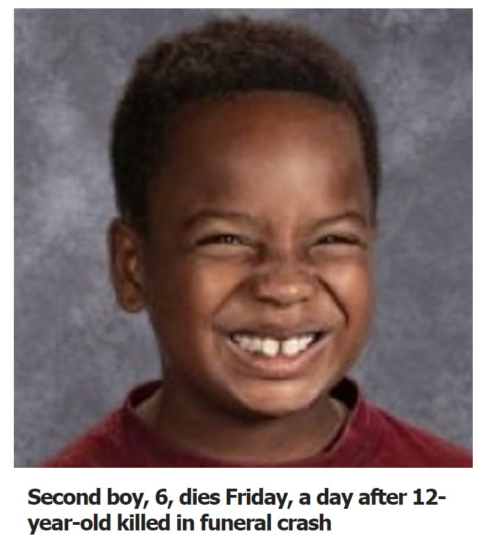

Timeline photos
The Summit County Medical Examiner's Office on Friday morning identified the 12-year-old as Tymar Allen, an Akron resident. The 6-year-old's name was not released Friday night.
I don't even know how to feel about this story other than sadness.
I guess sadness is the ultimate result of all this.
These people were in a funeral procession for a 17 year-old East High School student who died of a suspected overdose.
These things are not happening in Green or Copley or Hudson or Medina. These things are happening in Akron because of poverty and hopelessness.
We must help the people of Akron find some form of hope for a better future. Because right now the only future they see is death and suffering.